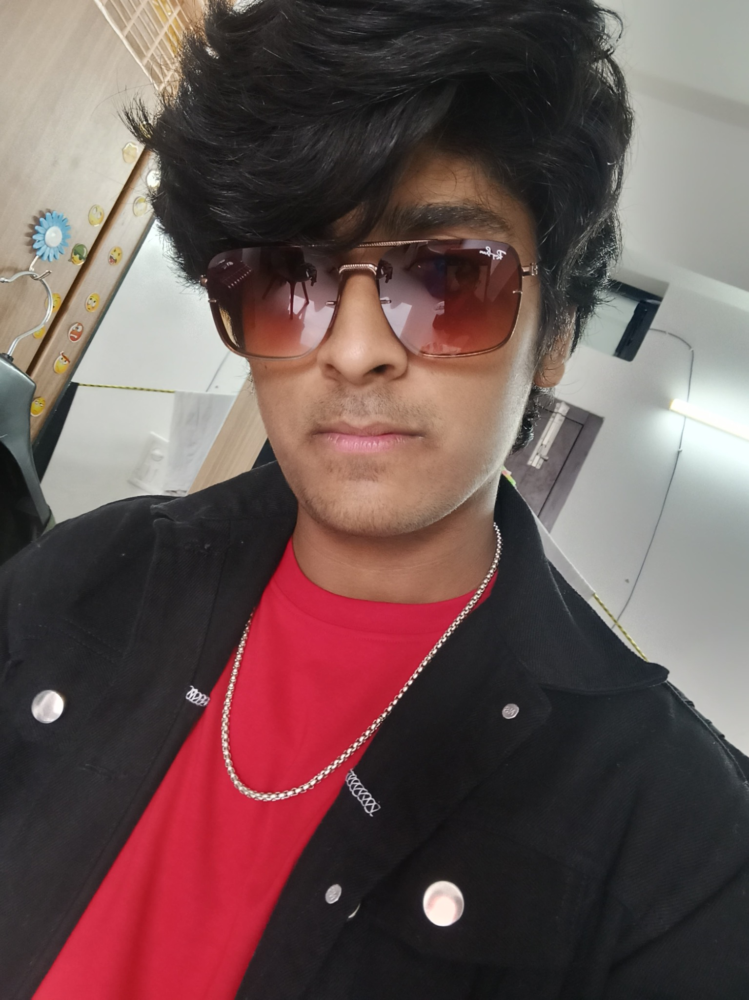
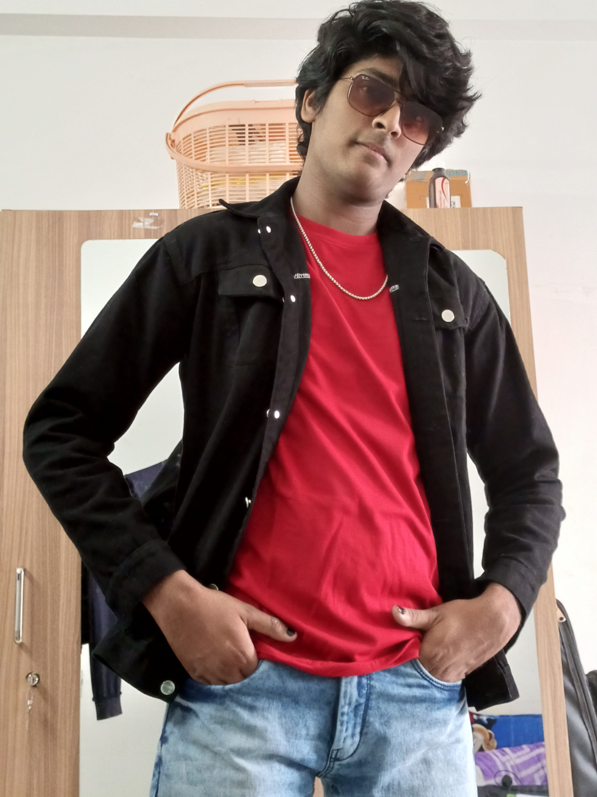
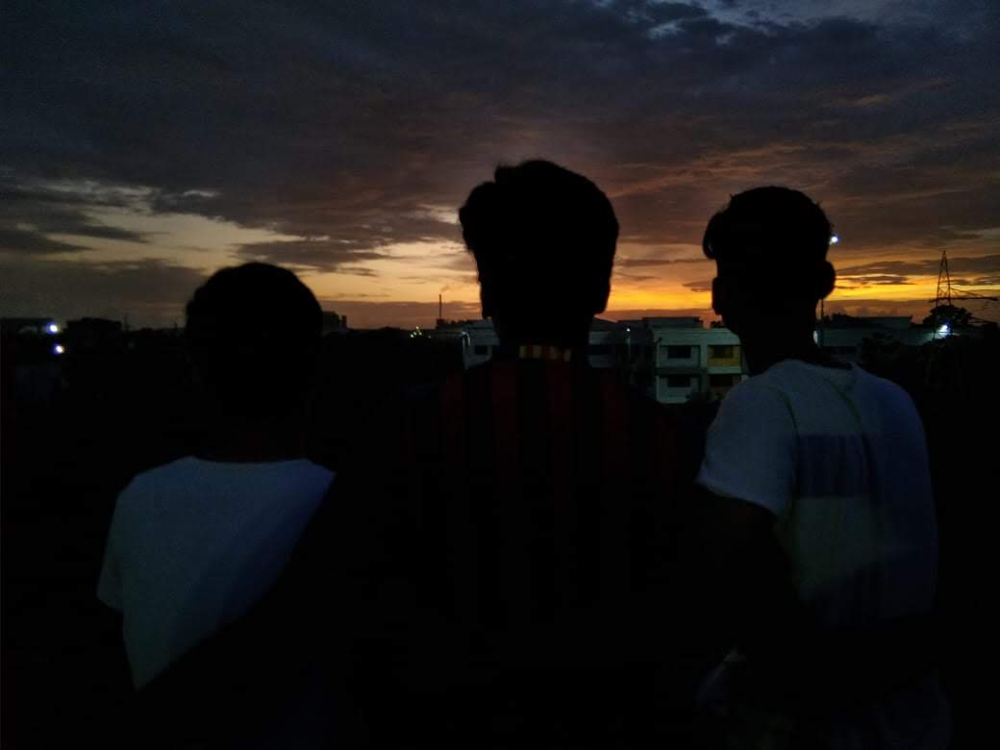
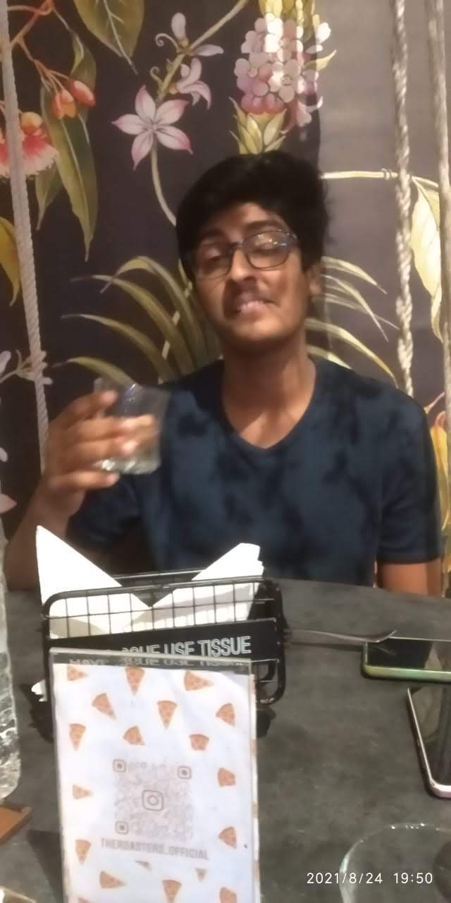
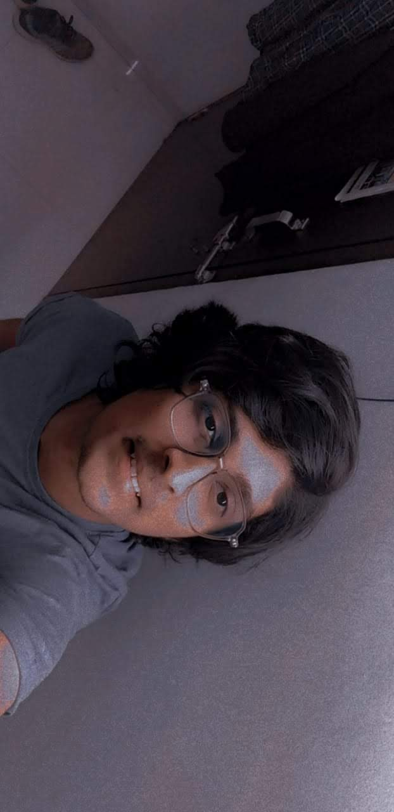
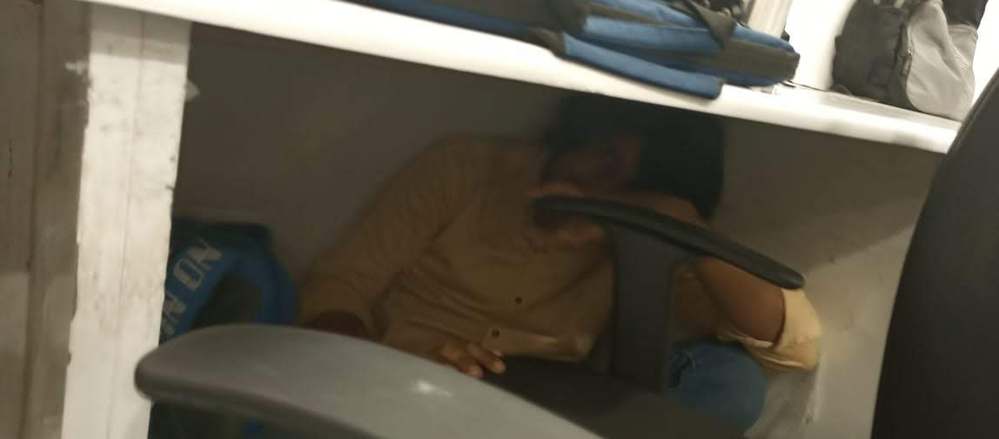
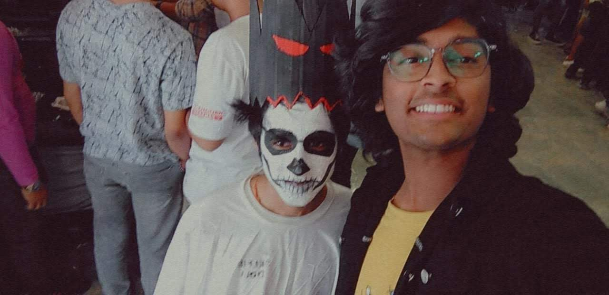
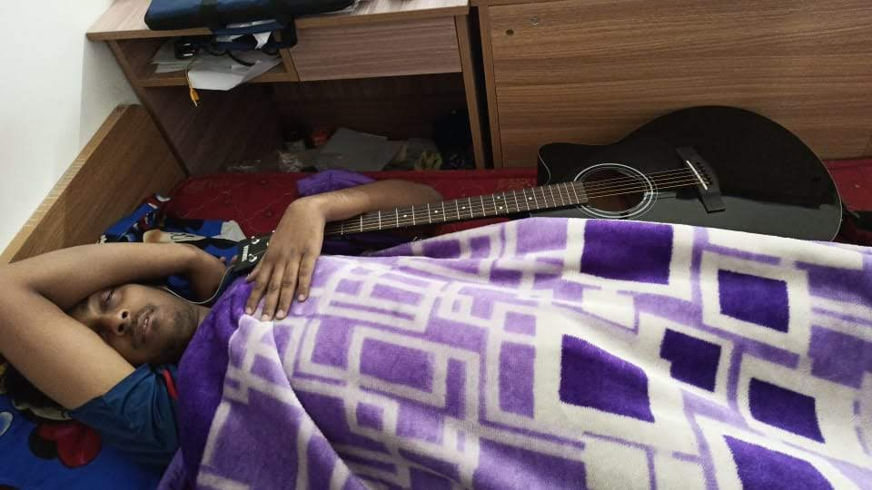
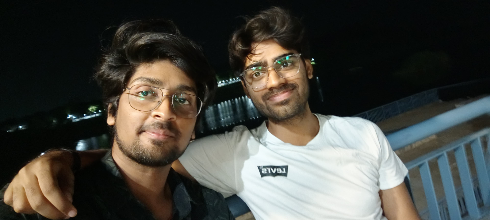

Happy
Sahil.
For the guitarist, singer, certified alien, emotional-support human, and the only guy capable of watching MHA Season 1 and then jumping straight to Season 4.

More than
just talent.
You don't just play music. You make people feel something. A guitarist, a singer, a vibe — but somehow an even better human.

Always
there.
Whenever I need someone to talk to, this guy is always there. No judgement, just vibes, real talks and endless support.

A different
kind of genius.
Bro really watched MHA Season 1... then Season 4. A crime against storytelling. And somehow still has alien strength. Scientists remain confused. 👽

A few frames
from the legend.



Every memory
needs a song.
For the nights, the jokes, the music, the chaos and the friendship — here's the soundtrack of this chapter.
Sahil baby,
this one's for you.
Sahil baby, you don't have to be scared. You will do great in your life, achieve great heights of success.
Bhai, your heart knows what you need to do — just follow your godddam heart, bhai.
I always love you and support you, mere bhai. ❤️ You're my star ⭐, my superhero. You inspire me to be happy and live life my way, on my own terms.
Love you and happy birthday! Wished you at the right time, didn't I? 😜😘

the guitarist, always.
brothers for life.The best songs
are still unwritten.
Happy birthday, Sahil. More chapters. More music. More life.